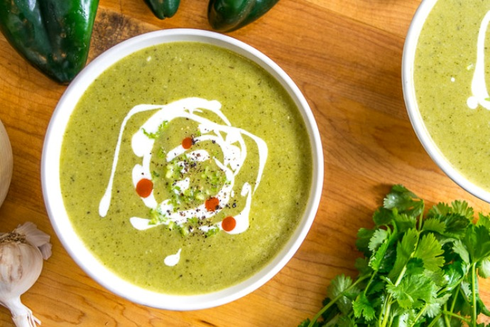

Roasted Pablano Pepper Soup

Description
Roasted Pablano Pepper Soup is the crown jewel of the Walter's family recipe box.
With it's creamy heat and and complex (yet not overpowering) flavor, its probably the most versatile food you've never had.
Originally we made the soup to be just that, a soup - but later found ourselves putting it on eggs,
using it as an enchilada base,
serving it as a dipping sauce, and it even goes great on tacos.
Ingredients
- Pablano Peppers - 3 (large)
- Jalepeno Peppers - 3 (large)
- Olive Oil - 2 tablespoons
- Red Bell Pepper - 1 (large)
- Purple Onion - 1 (medium size)
- Carrots - 1 (medium size)
- Garlic - 3-4 cloves
- Butter - 1 Tablespoon
- Flour - I Tablespoon
- Whole Milk - 3 Cups
- Heavy Cream - 2 Cups
- Chicken Boullion - 1 teaspoon
- Cooked Chicken - 10 ounces
- Pepper Jack Cheese - 8 ounces
- Sour Cream - 4 ounces
- Cayenne Pepper - to taste
- Black Pepper - to taste
- Salt - to taste
Steps
- Roast the Jalepeno and Poblano peppers over an open flame. Keep the peppers over the fire untill they are charred on the outside but not completely scorched.
- Set the peppers aside in a container or ziplock bag to allow them to sweat. This will make peeling the charred skin off much easier.
- While the peppers are sweating - combine the roughly chopped onion, red pepper, and carrot into a dutch oven. Simmer on low in olive oil.
- Allow the vegetables to cook on medium/low heat for 10 minutes before adding the chopped garlic
- Cook until soft, remove from heat, put the cooked vegetables into a seperate container and set aside for later
- Remove the charred skins and seeds from the roasted peppers. You want to remove everything black, but keep as much "meat" from the pepper as possible. Set these back to the side.
- In the dutch oven, combine the butter and flour to make a roux - heating on low until almost browned
- Add the milk and hevy cream to the roux and whisk, simmer on medium/low for 5 minutes before adding the salt, pepper, and chicken boullion.
- Combine the cooked vegetables, roastd peppers, and cooked chicken into the cream mixture. With an immersion blender - puree the mixture untill smooth.
- Heat the mixture on low while adding the grated pepper jack, stir untill all the cheese is melted.
- Add the sour cream just before serving, if you'd like you can garnish with avacado, more cheese or sour cream, or tortilla strips.